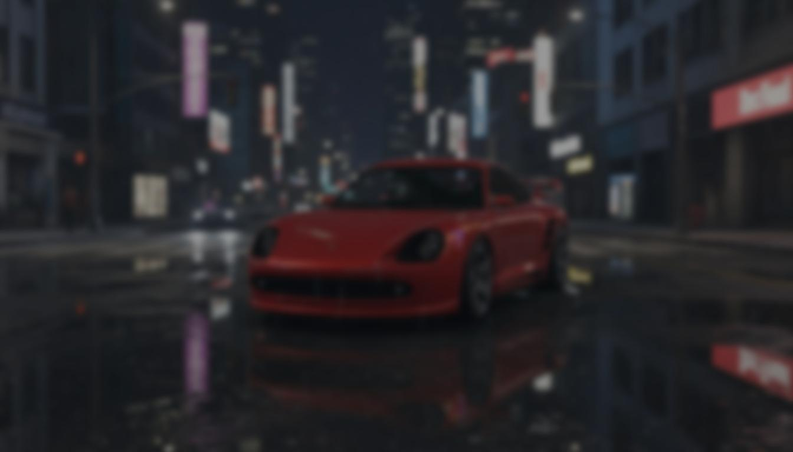
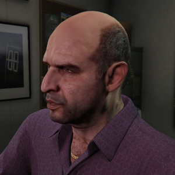
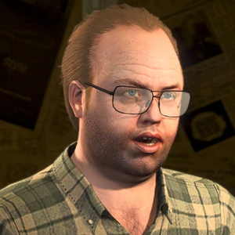

<!DOCTYPE html>
<html lang="es">
<head>
    <meta charset="UTF-8">
    <meta name="viewport" content="width=device-width, initial-scale=1.0">
    <title>Página Principal</title>
    <link rel="stylesheet" href="../css/styleconocenos.css">
</html>
<body>
  <nav>
        <a href="logo">
            
        </a>
        <ul class="menu">
            <li><a href="main.html">Inicio</a></li>
            <li><a href="coches.html">Nuestros coches</a></li>
            <li><a href="conocenos.html">Conócenos</a></li>
        </ul>
  </nav>
</body>
    
<p class="texto-comet">
    Bienvenido a Legendary Motorsport, el mejor concesionario de lujo en todo Los Santos.<br>
    Aquí, en el corazón de la ciudad, he reunido la flota más exclusiva para quienes<br>
    buscan velocidad, status y estilo auténtico. Si has llegado hasta mí, sabes que<br>
    en Legendary Motorsport no vendemos simples coches: ofrecemos símbolos de poder<br>
    y éxito, elegidos especialmente para los que desean dominar las calles y dejar<br>
    una marca imborrable en Vinewood y más allá.<br>
<br>
    Mi catálogo está lleno de las joyas más deseadas del automovilismo de San Andreas,<br>
    desde superdeportivos capaces de escaparte de los LSPD hasta deportivos tan<br>
    elegantes que hasta los famosos de Vinewood se quedan mirando. Cada vehículo<br>
    que pongo en tus manos representa las últimas tendencias, los motores más potentes<br>
    y la personalización más exclusiva que puedas imaginar. Y aquí, solo quienes de<br>
    verdad saben lo que significa lujo pueden acceder a estos modelos únicos.<br>
<br>
    Así que si quieres ser leyenda entre los corredores clandestinos, los empresarios<br>
    de éxito o simplemente destacar en las fiestas más exclusivas, Legendary Motorsport<br>
    es tu puerta de entrada al mundo de la élite de Los Santos. ¿Listo para llevar<br>
    tu reputación al siguiente nivel y sentir el rugido de una máquina única bajo<br>
    tus manos? Aquí, tu próxima leyenda te espera.
</p>
<section>
  <h2 class="linea">Nuestro Equipo</h2>
  <br>
  <div class="equipo-grid">
    <div class="equipo-item">
      
      <div class="info-equipo">
        <h3>SIMEON YETARIAN</h3>
        <p>
          Simeon Yetarian es un empresario armenio conocido por su astucia y habilidades en el mercado de vehículos de lujo en Los Santos. Como fundador de Legendary Motorsport, Simeon ha sabido ganarse una reputación —no siempre positiva— gracias a sus técnicas de venta poco convencionales y su capacidad para cerrar tratos con todo tipo de clientes, desde celebridades hasta los personajes más insólitos de la ciudad. Su ambición y habilidad para moverse en los entornos más competitivos han sido claves para consolidar Legendary Motorsport como referente en la industria automotriz digital de Los Santos.
        </p>
      </div>
    </div>

    <div class="equipo-item">
      
      <div class="info-equipo">
        <h3>LESTER CREST</h3>
        <p>
          Lester Crest es el cerebro detrás de muchas operaciones importantes del crimen organizado en Los Santos y uno de los genios tecnológicos más reconocidos en el mundo digital del juego. Como co-creador de Legendary Motorsport, Lester aporta su estrategia, visión de negocio y conocimientos avanzados de seguridad e informática. Aunque su vida fue marcada por problemas de salud y una personalidad reservada, su capacidad para planificar, analizar y ejecutar ha dado a Legendary Motorsport ventajas únicas sobre sus competidores, asegurando siempre estar un paso adelante en el competitivo sector automotriz de la ciudad.
        </p>
      </div>
    </div>
  </div>
</section>
<footer>
  <p class="textfooter">© 2025 Legendary Motorsport. Todos los derechos reservados. Legendary Motorsport es una marca registrada dedicada a la venta y distribución de automóviles exclusivos y clásicos. Prohibida la reproducción total o parcial sin permiso.</p>
</footer>
</html>